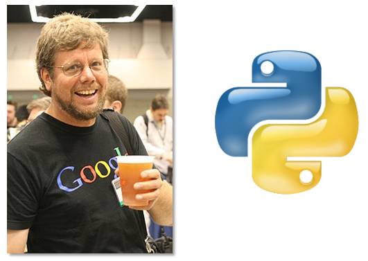
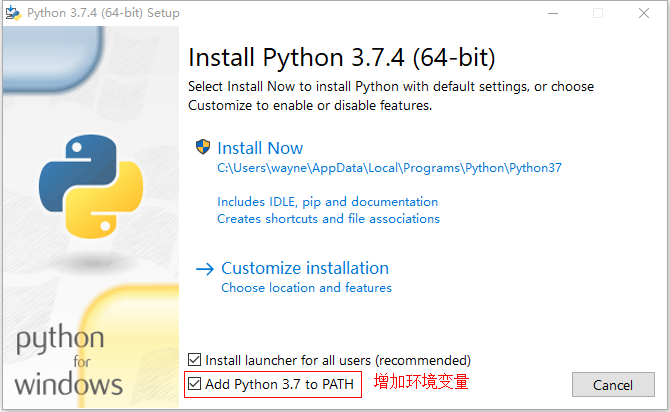
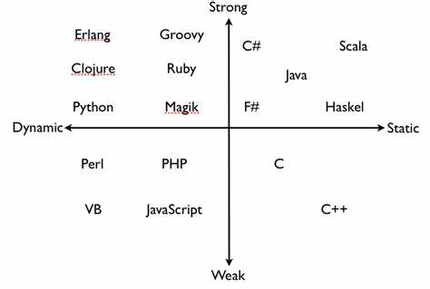
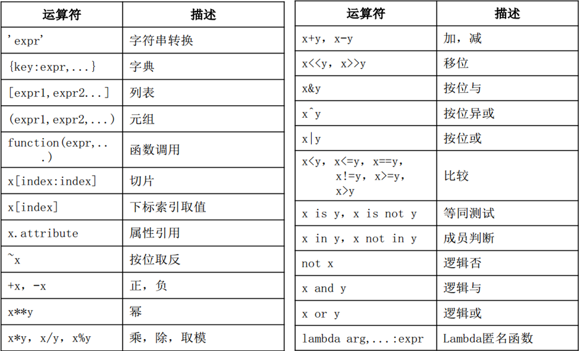

基础语法
1. Python发展

1989年圣诞节期间，为了打发无聊的时间，荷兰人Guido van Rossum（数学、计算机双硕士，2005年加入Google，2013年加入DropBox），决心开发一种新的解释性脚本语言。
1991年初发布了第一个公开发行版。由于他是英国BBC喜剧《Monty Python’s Flying Circus》的忠实粉丝，因此为这门语言取名Python。
Python目前已经成为很多大学的编程课语言。甚至在国内一些考试已经引入了Python。科学计算方面、运维领域Python几乎已经成为最主要的编程语言，拥有非常方便快捷开发的库。
Python的哲学，可以使用 import this 查看Python之禅。
2. Python的版本
目前企业中使用的主要版本还是2.x和3.x。
2.x最后一个版本是2.7，很多企业为了兼容老项目依然在维护。从2020年开始，不在支持Python2，官方还提供了一个倒计时网站https://pythonclock.org/。
3.x还在不断的扩充发展，当前主流版本是3.6+。
- 2015年9月发布3.5
- 2016年12月发布3.6
- 2018年6月发布3.7
- 2019年10月发布3.8
- 2020年10月发布3.9
Python2和3的区别
- 语句函数化，例如print(1,2)打印出1 2，但是2.x中意思是print语句打印元组，3.x中意思是函数的2个参数整除，例如1/2和1//2，3.x版本中/为自然除
- 3.x中raw_input重命名为input，不再使用raw_input
- round函数，在3.x中i.5的取整变为距离最近的偶数
- 3.x字符串统一使用Unicode
- 异常的捕获、抛出的语法改变
2015年后，各主要国内外大公司都已经迁移到了Python3。很多重要的Python第三方库也陆续停止了对Python2的支持，所以，Python 3已经是必须学习的版本。2018年Python3的使用比例已经超过了85%。
在公司内，往往老项目维护维持2.x版本暂不升级，新项目使用3.x开发。
开发时，假如使用3.5.8，部署时应尽量保持一致，不要随意升级版本，更不要降低版本。
不要迷信版本，学会一个版本，好好学会一门语言，其他都不是问题。当然，也不要迷信语言。
在最合适的领域使用最合适的语言。
截止2021年3月，3.8、3.9版本依然为不稳定版本。
3. 环境安装
官方网站下载不同平台。https://www.python.org/downloads/
3.1 Linux环境安装
如果是Ubuntu等桌面系统，都已经更新到了Python较新的版本。但多数生产环境使用的还是红帽系统。
CentOS7默认还是Python2.7，而开发环境如果是高版本Python就带来了问题。为了不破坏当前系统使用，甚至以后为了多个Python项目部署（这些项目使用不同Python解释器版本），建议使用多版本工具。
也可以考虑容器部署Python应用程序。
多版本安装
以CentOS8为例
1 | # yum install python36 python38 |
虚拟环境
1 | 安装虚拟环境 |
新建一个普通用户
1 | # useradd python |
创建工程目录，并设置虚拟环境
1 | $ mkdir -p projects/cmdb |
基于3.6的虚拟环境，使用-p 指定3.6版本python解释器
1 | $ virtualenv -p /usr/bin/python3.6 vcmdb36 |
3.2 Windows环境安装
下载 Windows x86-64 executable installer ，按照提示安装即可
勾选增加PATH路径，简单安装直接点击"Install Now"。

打开Windows命令行
1 | $ python -V |
pip是Python包管理器，以后安装Python第三方包都需要它，它从3.x开始就集成在Python安装包里面了。
4. pip通用配置
windows配置文件： ~/pip/pip.ini windows家目录，在“运行”中键入 .
Linux配置文件： ~/.pip/pip.conf
内容，可参照 http://mirrors.aliyun.com的pypi帮助
1 | [global] |
pip install pkgname 命令，是安装python包的命令
5. 安装ipython
5.1 ipython
是增强的交互式Python命令行工具
1 | $ pip list |
5.2 Jupyter
是基于WEB的交互式笔记本，其中可以非常方便的使用Python。
安装Jupyter，也会依赖安装ipython的
1 | $ pip install jupyter |
常用快捷键
- a之前插入代码块、b之后插入代码块
- L 增加行号
- 运行代码块 shift + enter，选择下面的代码块
- 运行当前代码块 ctrl + enter
6. Pycharm安装
Windows用户，官网下载Pycharm社区版，足够开发项目使用了。按照软件安装向导提示安装即可。
Ubuntu可在应用市场安装社区版。
7. 查阅帮助
- 在线帮助，html
- 下载并打开官方文档，chm
- 第一手好的资料应该是帮助文档
https://www.python.org/downloads/windows/ - IPython中
- 使用help(keyword)，keyword可以是变量、对象、类、函数等
- keyword?
- keyword??
8. Python解释器
| 解释器 | 说明 |
|---|---|
| CPython | 官方，C语言开发，最广泛的Python解释器 |
| IPython | 一个交互式、功能增强的CPython |
| PyPy | Python语言写的Python解释器，JIT技术，动态编译Python代码 |
| Jython | Python的源代码编译成Java的字节码，跑在JVM上 |
| IronPython | 与Jython类似，运行在.Net平台上的解释器，Python代码被编译成.Net的字节码 |
| stackless | Python的增强版本解释器，不使用CPython的C的栈，采用微线程概念编程，并发编程 |
9. 基础语法
9.1 注释
# 井号标注的文本
9.2 数字
- 整数int
- Python3开始不再区分long、int，long被重命名为int，所以只有int类型了
- 进制表示：
- 十进制10
- 十六进制0x10
- 八进制0o10
- 二进制0b10
- bool类型，有2个值True、False
- 浮点数float
- 1.2、3.1415、-0.12，1.46e9等价于科学计数法1.46*109
- 本质上使用了C语言的double类型
- 复数complex
- 1+2j或1+2J
9.3 字符串
- 使用 ’ " 单双引号引用的字符的序列
- ‘’'和"“” 单双三引号，可以跨行、可以在其中自由的使用单双引号
- r前缀：在字符串前面加上r或者R前缀，表示该字符串不做特殊的处理
- f前缀：3.6版本开始，新增f前缀，格式化字符串
字符串拼接
1 | str(1) + ',' + 'b' # 都转换成字符串拼接到一起 |
9.4 转义序列
\\ \t \r \n \' \"
- 上面每一个转义字符只代表一个字符，例如 \t 显示时占了4个字符位置，但是它是一个字符
- 前缀r，把里面的所有字符当普通字符对待，则转义字符就不转义了。
- 转义：让字符不再是它当前的意义，例如\t，t就不是当前意义字符t了，而是被\转成了tab键
9.5 缩进
- 未使用C等语言的花括号，而是采用缩进的方式表示层次关系
- 约定使用4个空格缩进
9.6 续行
- 在行尾使用 \，注意\之后除了紧跟着换行之外不能有其他字符
- 如果使用各种括号，认为括号内是一个整体，其内部跨行不用 \
9.7 标识符
- 一个名字，用来指代一个值
- 只能是字母、下划线和数字
- 只能以字母或下划线开头
- 不能是python的关键字，例如def、class就不能作为标识符
- Python是大小写敏感的
标识符约定：
- 不允许使用中文，也不建议使用拼音
- 不要使用歧义单词，例如class_
- 在python中不要随便使用下划线开头的标识符
9.8 语言类型

Python是动态语言、强类型语言。
静态语言
- 事先声明变量类型，之后变量的值可以改变，但值的类型不能再改变
- 编译时检查
动态语言
- 不用事先声明类型，随时可以赋值为其他类型
- 编程时不知道是什么类型，很难推断
强类型语言
- 不同类型之间操作，必须先强制类型转换为同一类型。 print(‘a’+1)
弱类型语言
- 不同类型间可以操作，自动隐式转换，JavaScript中 console.log(1+‘a’)
但是要注意的是，强与弱只是一个相对概念，即使是强类型语言也支持隐式类型转换。
9.10 False等价
False等价布尔值，相当于bool(value)
- 空容器
- 空集合set
- 空字典dict
- 空列表list
- 空元组tuple
- 空字符串
- None
- 0
9.11 运算符Operator
9.11.1 算数运算符
+、-、*、/、//向下取整整除、%取模、**幂
注：在Python2中/和//都是整除。
9.11.2 位运算符
&位与、|位或、^异或、<<左移、>>右移
~按位取反，包括符号位
9.11.3 比较运算符
==、!=、>、>=、<、<=
链式比较： 4 > 3 > 2
比较运算符，返回一个bool值
思考：1 == ‘1’ 吗？ 1 > ‘1’ 吗？
9.11.4 逻辑运算符
与and、或or、非not
逻辑运算符也是短路运算符
- and 如果前面的表达式等价为False，后面就没有必要计算了，这个逻辑表达式最终一定等价为False
1 | 1 and '2' and 0 |
- or 如果前面的表达式等价为True，后面没有必要计算了，这个逻辑表达式最终一定等价为True
1 | 1 or False or None |
- 特别注意，返回值。返回值不一定是bool型
- 把最频繁使用的，做最少计算就可以知道结果的条件放到前面，如果它能短路，将大大减少计算量
9.11.5 赋值运算符
a = min(3, 5)
+=、 -= 、*=、/=、%=、//= 等
x = y = z = 10
赋值语句先计算等式右边，然后再赋值给变量
9.11.6 成员运算符
in、not in，用来判断是否是容器的元素，返回布尔值
9.11.7 身份运算符
is 、is not，用来判断是否是同一个对象
9.12 运算符优先级

- 单目运算符 > 双目运算符
- 算数运算符 > 位运算符 > 比较运算符 > 逻辑运算符
- -3 + 2 > 5 and ‘a’ > ‘b’
搞不清楚就使用括号。长表达式，多用括号，易懂、易读
9. 13 表达式
由数字、符号、括号、变量等的组合。有算数表达式、逻辑表达式、赋值表达式、lambda表达式等等。
Python中，赋值即定义。Python是动态语言，只有赋值才会创建一个变量，并决定了变量的类型和值。
如果一个变量已经定义，赋值相当于重新定义。
10. 内建函数
| 内建函数 | 函数签名 | 说明 |
|---|---|---|
| print(value, …, sep=’ ‘,end=’\n’) | 将多个数据输出到控制台，默认使用空格分隔、\n换行 | |
| input | input([prompt]) | 在控制台和用户交互，接收用户输入，并返回字符串 |
| int | int(value) | 将给定的值，转换成整数。int本质是类 |
| str | str(value) | 将给定的值，转换成字符串。str本质是类 |
| type | type(value) | 返回对象的类型。本质是元类 |
| isinstance | isinstance(obj,class_or_tuple) | 比较对象的类型，类型可以是obj的基类 |
1 | print(1,2,3,sep='\n', end='***') |
11. 程序控制
- 顺序
- 按照先后顺序一条条执行
- 例如，先洗手，再吃饭，再洗碗
- 分支
- 根据不同的情况判断，条件满足执行某条件下的语句
- 例如，先洗手，如果饭没有做好，玩游戏；如果饭做好了，就吃饭；如果饭都没有做，叫外卖
- 循环
- 条件满足就反复执行，不满足就不执行或不再执行
- 例如，先洗手，看饭好了没有，没有好，一会来看一次是否好了，一会儿来看一次，直到饭好了，才可是吃饭。这里循环的条件是饭没有好，饭没有好，就循环的来看饭好了没有
11.1 单分支
1 | if condition: |
- condition必须是一个bool类型，这个地方有一个隐式转换bool(condition)，相当于False等价
- if 语句这行最后，会有一个冒号，冒号之后如果有多条语句的代码块，需要另起一行，并缩进
- if、for、def、class等关键字后面都可以跟代码块
- 这些关键后面，如果有一条语句，也可以跟在这一行后面。例如 if 1>2: pass
11.2 多分支
1 | if condition1: |
- 多分支结构，只要有一个分支被执行，其他分支都不会被执行
- 前一个条件被测试过，下一个条件相当于隐含着这个条件
1 | # 嵌套 |
11.3 while循环
while循环多用于死循环，或者不明确知道循环次数的场景
1 | while cond: |
- 上例执行结果是什么？
- 为什么？
- 会不会打印出0？要注意边界的分析
- 如果a=-10可以吗？如何改？回忆一下，False等价是什么？
11.4 for语句
1 | for element in iteratable: # 可迭代对象中有元素可以迭代，进入循环体 |
| 内建函数 | 函数签名 | 说明 |
|---|---|---|
| range | range(stop)range(start, stop[,step]) | 返回惰性的对象可以生成一个序列，遍历它就可以得到这个序列的一个个元素前包后不包 |
1 | # 计数器 |
range(i)，i大于0，相当于计数器。
练习：
- 打印1到10
- 打印10以内的奇数
- 打印10以内的偶数
- 倒着打印10以内的奇数或偶数
1 | # 打印偶数 |
11.5 continue
跳过当前循环的当次循环，继续下一次循环
1 | for i in range(0, 10): |
11.6 break
结束当前循环
练习：计算1000以内的，从7开始，被7整除的前15个正整数（for循环）
1 | # 计算1000以内的被7整除的前15个正整数 |
总结
- continue和break是循环的控制语句，只影响当前循环，包括while、for循环
- 如果循环嵌套， continue和break也只影响语句所在的那一层循环
- continue和break 只影响循环，所以 if cond: break 不是跳出if，而是终止if外的break所在的循环
- 分支和循环结构可以嵌套使用，可以嵌套多层。
11.7 else子句
如果循环正常结束，else子句会被执行，即使是可迭代对象没有什么元素可迭代
1 | for i in range(0): # 可迭代对象没有迭代 |
有上例可知，一般情况下，循环正常执行，只要当前循环不是被break打断的，就可以执行else子句。哪怕是range(0)也可以执行else子句。
11.8 三元表达式
在Python中，也有类似C语言的三目运算符构成的表达式，但python中的三元表达式不支持复杂的语句
| 真值表达式 if 条件表达式 else 假值表达式
三元表达式比较适合简化非常简单的if-else语句。
1 | # 判断用户的输入的值，如果为空，输出"empty"，否则输出该值 |